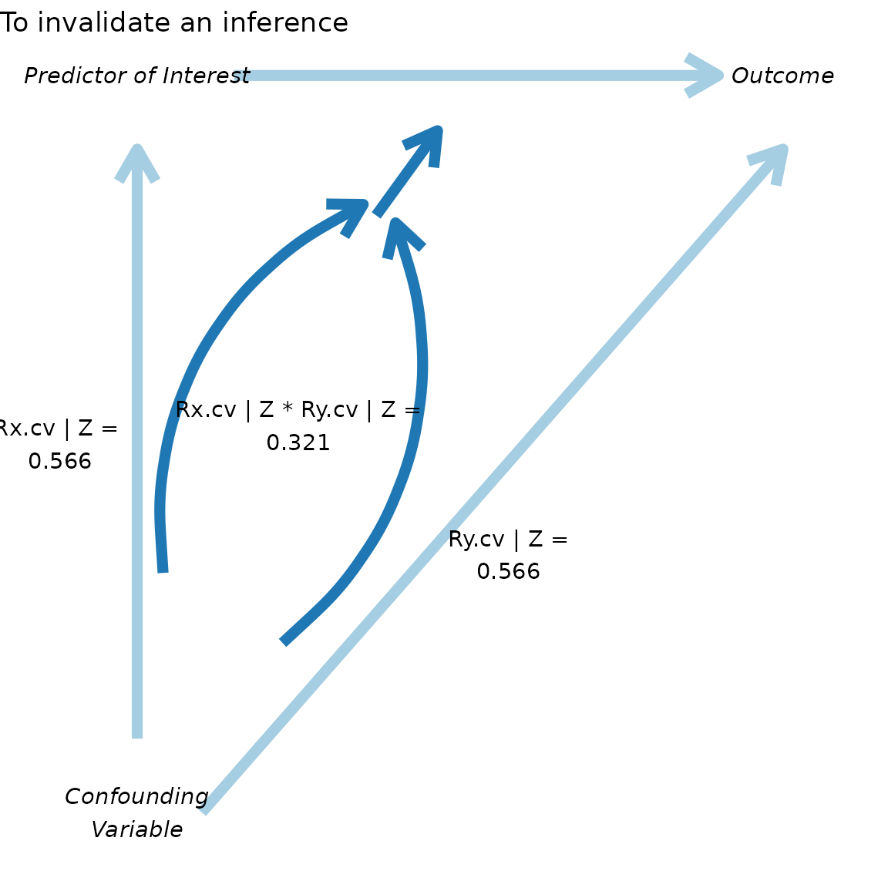

Introduction to konfound
Joshua Rosenberg, Ran Xu, Qinyun Lin, and Ken Frank
2024-02-13
Source:vignettes/introduction-to-konfound.Rmd
introduction-to-konfound.RmdIntroduction
In social science (and educational) research, we often wish to
understand how robust inferences about effects are to unobserved (or
controlled for) covariates, possible problems with measurement, and
other sources of bias. The goal of konfound is to carry out
sensitivity analysis to help analysts to quantify how robust
inferences are to potential sources of bias. This package provides
functions based on developments in sensitivity analysis by Frank and
colleagues, which previously have been implemented in Stata
and through an Excel spreadsheet, in R through the
konfound package. In particular, we provide functions for
both values from analyses carried out outside of R as well as from
models (lm(), glm(), and
lme4::lmer() fit in R) for:
- Quantifying the bias necessary to alter an inference from the framework of Rubin’s (1974) causal model
- The robustness of causal inference in terms of the impact threshold of a confounding variable
You can install konfound with the following:
install.packages("konfound")You can then load konfound with the library()
function:
library(konfound)
#> Sensitivity analysis as described in Frank, Maroulis, Duong, and Kelcey (2013) and in Frank (2000).
#> For more information visit http://konfound-it.com.
#>
#> Attaching package: 'konfound'
#> The following object is masked from 'package:base':
#>
#> summaryUse of pkonfound() for values from an already-conducted analysis
pkonfound() is used when we have values from an
already-conducted analysis (like a regression analysis), such as one in
an already-published study or from an analysis carried out using other
software.
In the case of a regression analysis, values from the analysis would
simply be used as the inputs to the pkonfound() function.
For example, in the use below, we simply enter the values for the
estimated effect (an unstandardardized beta coefficient)
(2), its standard error (.4), the sample size
(100), and the number of covariates (3):
pkonfound(2, .4, 100, 3)
#> Robustness of Inference to Replacement (RIR):
#> To invalidate an inference, 60.29 % of the estimate would have to be due to bias.
#> This is based on a threshold of 0.794 for statistical significance (alpha = 0.05).
#>
#> To invalidate an inference, 60 observations would have to be replaced with cases
#> for which the effect is 0 (RIR = 60).
#>
#> See Frank et al. (2013) for a description of the method.
#>
#> Citation: Frank, K.A., Maroulis, S., Duong, M., and Kelcey, B. (2013).
#> What would it take to change an inference?
#> Using Rubin's causal model to interpret the robustness of causal inferences.
#> Education, Evaluation and Policy Analysis, 35 437-460.
#> For other forms of output, run ?pkonfound and inspect the to_return argument
#> For models fit in R, consider use of konfound().For this set of values, around 60% would need to be false due to a source of bias for the inference to be invalidated (based on statistical significance and a p-value (or alpha) of .05), possible a very robust effect. An omitted, confounding variable (sometimes referred to as a covariate) would need to have an impact (defined as the product of the confounding variable’s correlation with both the predictor of interest and the outcome) of 0.323, presenting a different interpretation of how robust this (hypothetical) effect is to a variable which is important but not included in the analysis.
Here is another example, but one in which the unstandardized beta coefficient is smaller than its standard error:
pkonfound(.4, 2, 100, 3)
#> Robustness of Inference to Replacement (RIR):
#> To sustain an inference, 89.927 % of the estimate would have to be due to bias.
#> This is based on a threshold of 3.971 for statistical significance (alpha = 0.05).
#>
#> To sustain an inference, 90 of the cases with 0 effect would have to be replaced with cases at the threshold of inference (RIR = 90).
#> See Frank et al. (2013) for a description of the method.
#>
#> Citation: Frank, K.A., Maroulis, S., Duong, M., and Kelcey, B. (2013).
#> What would it take to change an inference?
#> Using Rubin's causal model to interpret the robustness of causal inferences.
#> Education, Evaluation and Policy Analysis, 35 437-460.
#> For other forms of output, run ?pkonfound and inspect the to_return argument
#> For models fit in R, consider use of konfound().Note that this use of pkonfound() is equivalent to
naming the arguments, i.e. for a different set of values:
pkonfound(est_eff = -2.2,
std_err = .65,
n_obs = 200,
n_covariates = 3)
#> Robustness of Inference to Replacement (RIR):
#> To invalidate an inference, 41.728 % of the estimate would have to be due to bias.
#> This is based on a threshold of -1.282 for statistical significance (alpha = 0.05).
#>
#> To invalidate an inference, 83 observations would have to be replaced with cases
#> for which the effect is 0 (RIR = 83).
#>
#> See Frank et al. (2013) for a description of the method.
#>
#> Citation: Frank, K.A., Maroulis, S., Duong, M., and Kelcey, B. (2013).
#> What would it take to change an inference?
#> Using Rubin's causal model to interpret the robustness of causal inferences.
#> Education, Evaluation and Policy Analysis, 35 437-460.
#> For other forms of output, run ?pkonfound and inspect the to_return argument
#> For models fit in R, consider use of konfound().We notice that the output includes a message that says we can view
other forms of output by changing the to_return argument.
Here are the two plots - for the bias necessary to alter an inference
(thresh_plot) and for the robustness of an inference in
terms of the impact of a confounding variable (corr_plot)
that can be returned:
pkonfound(.4, 2, 100, 3, to_return = "thresh_plot")
pkonfound(.4, 2, 100, 3, to_return = "corr_plot")
Finally, you can return the raw output, for use in other analyses.
pkonfound(.4, 2, 100, 3, to_return = "raw_output")
#> # A tibble: 1 × 8
#> action inference percent_bias_to_chan…¹ replace_null_cases unstd_beta
#> <chr> <chr> <dbl> <dbl> <dbl>
#> 1 to_sustain fail_to_rejec… 89.9 90 0.4
#> # ℹ abbreviated name: ¹percent_bias_to_change_inference
#> # ℹ 3 more variables: beta_threshhold <dbl>, omitted_variable_corr <dbl>,
#> # itcv <dbl>This function can be used with the values from a two-by-two table associated with an intervention (represented as a dichotomous predictor variable) that is related with a binary outcome, such as one that could be modeled using a logistic regression. Below:
-
arepresents an unsuccessful control group outcome -
brepresents a successful control group outcome -
crepresents an unsuccessful treatment group outcome -
drepresents a successful treatment group outcome
# pkonfound(a = 35, b = 17, c = 17, d = 38)A table can also be passed to this function:
# my_table <- tibble::tribble(
# ~unsuccess, ~success,
# 35, 17,
# 17, 38,
# )
#
# pkonfound(two_by_two_table = my_table)Use of konfound() for models fit in R
Where pkonfound() can be used with values from
already-conducted analyses, konfound() can be used with
models (lm(), glm(), and
lme4::lmer()) fit in R.
For linear models fit with lm()
m1 <- lm(mpg ~ wt + hp + qsec, data = mtcars)
m1
#>
#> Call:
#> lm(formula = mpg ~ wt + hp + qsec, data = mtcars)
#>
#> Coefficients:
#> (Intercept) wt hp qsec
#> 27.61053 -4.35880 -0.01782 0.51083
konfound(m1, hp)
#> Robustness of Inference to Replacement (RIR):
#> To sustain an inference, 42.125 % of the estimate would have to be due to bias.
#> This is based on a threshold of -0.031 for statistical significance (alpha = 0.05).
#>
#> To sustain an inference, 13 of the cases with 0 effect would have to be replaced with cases at the threshold of inference (RIR = 13).
#> See Frank et al. (2013) for a description of the method.
#>
#> Citation: Frank, K.A., Maroulis, S., Duong, M., and Kelcey, B. (2013).
#> What would it take to change an inference?
#> Using Rubin's causal model to interpret the robustness of causal inferences.
#> Education, Evaluation and Policy Analysis, 35 437-460.
#> NULLWhereas this cannot be carried out with pkonfound(),
with konfound() you can also return a table with some key
output from the correlation-based approach.
konfound(m1, wt, to_return = "table")
#> Dependent variable is mpg
#> # A tibble: 4 × 6
#> term estimate std.error statistic p.value itcv
#> <chr> <dbl> <dbl> <dbl> <dbl> <dbl>
#> 1 (Intercept) 27.6 8.42 3.28 0.003 NA
#> 2 wt -4.36 0.753 -5.79 0 0.602
#> 3 hp -0.018 0.015 -1.19 0.244 0.511
#> 4 qsec 0.511 0.439 1.16 0.255 0.073If the impact threshhold is greater than the impacts of the
Zs (the other covariates) then an omitted variable would
have to have a greater impact than any of the observed covariates to
change the inference. Note that in fields in which there is a lot known
about covariates given the outcome of interest, then the omitted ones
are likely less important than those that are known an included (i.e.,
we have a good sense of the factors that matter in terms of educational
achievement).
For logistic regression models fit with glm()
Effects for these models are interpreted on the basis of average
partial (or marginal) effects (calculated using the margins
package).
# if forcats is not installed, this install it first using install.packages("forcats") for this to run
if (requireNamespace("forcats")) {
d <- forcats::gss_cat
d$married <- ifelse(d$marital == "Married", 1, 0)
m2 <- glm(married ~ age, data = d, family = binomial(link = "logit"))
konfound(m2, age)
}
#> Robustness of Inference to Replacement (RIR):
#> To invalidate an inference, 35.357 % of the estimate would have to be due to bias.
#> This is based on a threshold of 0.002 for statistical significance (alpha = 0.05).
#>
#> To invalidate an inference, 7569 observations would have to be replaced with cases
#> for which the effect is 0 (RIR = 7569).
#>
#> See Frank et al. (2013) for a description of the method.
#>
#> Citation: Frank, K.A., Maroulis, S., Duong, M., and Kelcey, B. (2013).
#> What would it take to change an inference?
#> Using Rubin's causal model to interpret the robustness of causal inferences.
#> Education, Evaluation and Policy Analysis, 35 437-460.
#> NULLFor logistic regression models fit with glm() with a dichotomous predictor of interest
For mixed effects (or multi-level) models fit with the lmer() function from the lme4 package
konfound also works with models fit with the
lmer() function from the package lme4, for
mixed-effects or multi-level models. One challenge with carrying out
sensitivity analysis for fixed effects in mixed effects models is
calculating the correct denominator degrees of freedom for the t-test
associated with the coefficients. This is not unique to sensitivity
analysis, as, for example, lmer() does not report degrees
of freedom (or p-values) for fixed effects predictors (see this
information in the lme4 FAQ here).
While it may be possible to determine the correct degrees of freedom for
some models (i.e., models with relatively simple random effects
structures), it is difficult to generalize this approach, and so in this
package the Kenward-Roger approximation for the denominator degrees of
freedom as implemented in the pbkrtest package (described
in Halekoh
and Højsgaard, 2014).
Here is an example of the use of konfound() with a model
fit with lmer():
if (requireNamespace("lme4")) {
library(lme4)
m3 <- fm1 <- lmer(Reaction ~ Days + (1 | Subject), sleepstudy)
konfound(m3, Days)
}
#> Loading required package: Matrix
#> Robustness of Inference to Replacement (RIR):
#> To invalidate an inference, 84.825 % of the estimate would have to be due to bias.
#> This is based on a threshold of 1.588 for statistical significance (alpha = 0.05).
#>
#> To invalidate an inference, 137 observations would have to be replaced with cases
#> for which the effect is 0 (RIR = 137).
#>
#> See Frank et al. (2013) for a description of the method.
#>
#> Citation: Frank, K.A., Maroulis, S., Duong, M., and Kelcey, B. (2013).
#> What would it take to change an inference?
#> Using Rubin's causal model to interpret the robustness of causal inferences.
#> Education, Evaluation and Policy Analysis, 35 437-460.
#> Note that the Kenward-Roger approximation is used to estimate degrees of freedom for the predictor(s) of interest. We are presently working to add other methods for calculating the degrees of freedom for the predictor(s) of interest. If you wish to use other methods now, consider those detailed here: https://bbolker.github.io/mixedmodels-misc/glmmFAQ.html#why-doesnt-lme4-display-denominator-degrees-of-freedomp-values-what-other-options-do-i-have. You can then enter degrees of freedom obtained from another method along with the coefficient, number of observations, and number of covariates to the pkonfound() function to quantify the robustness of the inference.
#> NULLUse of mkonfound() for meta-analyses that include sensitivity analysis
We can also use konfound to carry out sensitivity
analysis as part of meta-analyses. For example, here, d
represents output from a number (30 in this case) of past studies, read
in a CSV file from a website:
mkonfound_ex
#> # A tibble: 30 × 2
#> t df
#> <dbl> <dbl>
#> 1 7.08 178
#> 2 4.13 193
#> 3 1.89 47
#> 4 -4.17 138
#> 5 -1.19 97
#> 6 3.59 87
#> 7 0.282 117
#> 8 2.55 75
#> 9 -4.44 137
#> 10 -2.05 195
#> # ℹ 20 more rows
mkonfound(mkonfound_ex, t, df)
#> Warning: `data_frame()` was deprecated in tibble 1.1.0.
#> ℹ Please use `tibble()` instead.
#> ℹ The deprecated feature was likely used in the konfound package.
#> Please report the issue at <https://github.com/jrosen48/konfound/issues>.
#> This warning is displayed once every 8 hours.
#> Call `lifecycle::last_lifecycle_warnings()` to see where this warning was
#> generated.
#> # A tibble: 30 × 7
#> t df action inference pct_bias_to_change_i…¹ itcv r_con
#> <dbl> <dbl> <chr> <chr> <dbl> <dbl> <dbl>
#> 1 7.08 178 to_invalidate reject_null 68.8 0.378 0.614
#> 2 4.13 193 to_invalidate reject_null 50.6 0.168 0.41
#> 3 1.89 47 to_sustain fail_to_rejec… 5.47 -0.012 0.11
#> 4 -4.17 138 to_invalidate reject_null 50.3 0.202 0.449
#> 5 -1.19 97 to_sustain fail_to_rejec… 39.4 -0.065 0.255
#> 6 3.59 87 to_invalidate reject_null 41.9 0.19 0.436
#> 7 0.282 117 to_sustain fail_to_rejec… 85.5 -0.131 0.361
#> 8 2.55 75 to_invalidate reject_null 20.6 0.075 0.274
#> 9 -4.44 137 to_invalidate reject_null 53.0 0.225 0.475
#> 10 -2.05 195 to_invalidate reject_null 3.51 0.006 0.077
#> # ℹ 20 more rows
#> # ℹ abbreviated name: ¹pct_bias_to_change_inferenceWe can also return a plot summarizing the percent bias needed to sustan or invalidate an inference across all of the past studies:
mkonfound(mkonfound_ex, t, df, return_plot = TRUE)
#> Warning: Use of `results_df$pct_bias_to_change_inference` is discouraged.
#> ℹ Use `pct_bias_to_change_inference` instead.
#> Warning: Use of `results_df$action` is discouraged.
#> ℹ Use `action` instead.
#> `stat_bin()` using `bins = 30`. Pick better value with `binwidth`.Other information
How to learn more about sensitivity analysis
To learn more about sensitivity analysis, please visit: ’/ ?˘* The Introduction
to konfound vignette, with detailed information about each of the
functions (pkonfound(), konfound(), and
mkounfound()) * The causal inference section of Ken Frank’s
website here
* The konfound
interactive web application, with links to PowerPoints and key
publications
Feedback, issues, and feature requests
konfound is actively under development as of January,
2018. We welcome feedback and requests for improvement. We prefer for
issues to be filed via GitHub (link to the issues page for
konfound here) though we
also welcome questions or feedback via email (see the DESCRIPTION
file).
Code of Conduct
Please note that this project is released with a Contributor Code of Conduct available at https://www.contributor-covenant.org/version/1/0/0/
References
Frank, K.A., Maroulis, S., Duong, M., and Kelcey, B. 2013. What would it take to change an inference?: Using Rubin’s causal model to interpret the robustness of causal inferences. Education, Evaluation and Policy Analysis. Vol 35: 437-460. https://msu.edu/~kenfrank/What%20would%20it%20take%20to%20Change%20an%20Inference%20published.docx
Frank, K.A., Gary Sykes, Dorothea Anagnostopoulos, Marisa Cannata, Linda Chard, Ann Krause, Raven McCrory. 2008. Extended influence: National Board Certified Teachers as help providers. Education, Evaluation, and Policy Analysis. Vol 30(1): 3-30. https://msu.edu/~kenfrank/papers/Does%20NBPTS%20Certification%20Affect%20the%20Number%20of%20Colleagues%20a%20Teacher%20Helps%20with%20Instructional%20Matters%20acceptance%20version%202.doc
Frank, K. A. and Min, K. 2007. Indices of Robustness for Sample Representation. Sociological Methodology. Vol 37, 349-392. https://msu.edu/~kenfrank/papers/INDICES%20OF%20ROBUSTNESS%20TO%20CONCERNS%20REGARDING%20THE%20REPRESENTATIVENESS%20OF%20A%20SAMPLE.doc (co first authors)
Frank, K. 2000. “Impact of a Confounding Variable on the Inference of a Regression Coefficient.” Sociological Methods and Research, 29(2), 147-194 https://msu.edu/~kenfrank/papers/impact%20of%20a%20confounding%20variable.pdf